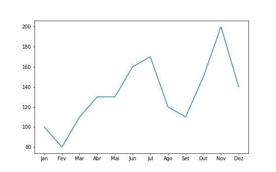
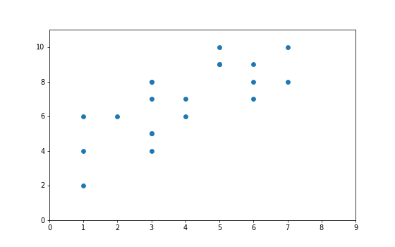
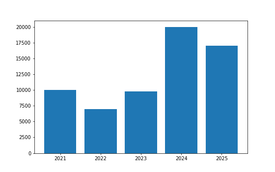
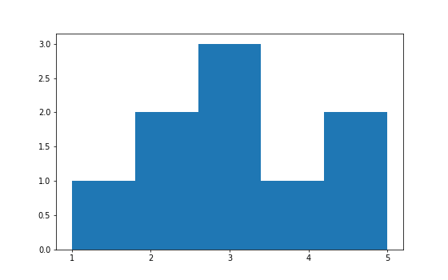
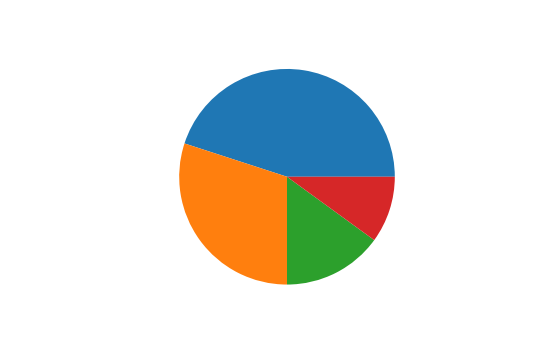
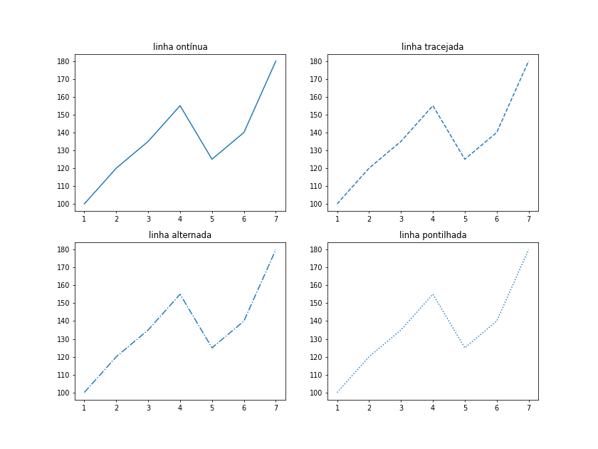
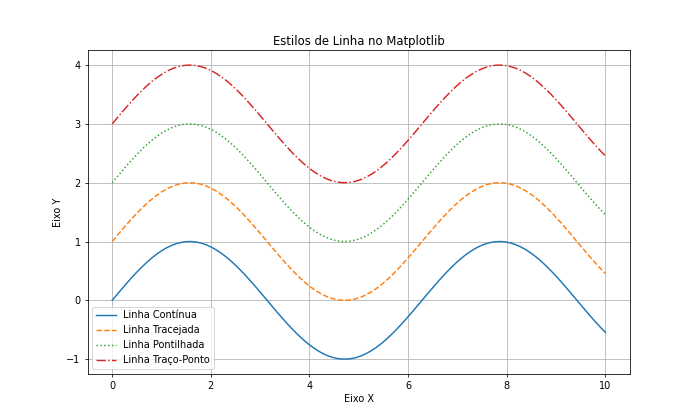

Estrutura Básica do Pyplot
A estrutura básica do Pyplot para criar gráficos é simples e segue um fluxo comum de etapas: preparar os dados, gerar o gráfico e opcionalmente personalizar.
-
Impotação do pyplot
Primeiro, você precisa importar o Pyplot, geralmente com o alias plt:
import matplotlib.pyplot as plt
-
Preparação dos Dados
A preparação dos dados é uma das etapas mais importantes ao trabalhar com Pyplot, pois define como as informações serão interpretadas e exibidas no gráfico. Essa etapa envolve organizar os dados de entrada, geralmente como listas, arrays ou estruturas de dados mais complexas, como DataFrames do pandas.
Aqui estão os principais detalhes:1.
Formatos de Dados O Pyplot é muito flexível e aceita diversos formatos de dados para os eixos x e y:
Listas Python (list):Boa compatibilidade, Flexíveis e simples de usar
formados de dados aceitos
Tuplas Python (tuple):Imutabilidade, Eficiência e simples de usar
Arrays NumPy (numpy.array):operações vetorizadas, multidimensionais e
suporte a operações Avançadas
DataFrames do pandas (pandas.DataFrame):estrutura tabular, visualização de tendências
ou comparações entre categorias e limpeza de dados
Valores Calculados:dados dinamicos e gráficos matemáticos2. Correspondência entre x e y
Os eixos x e y precisam ter o mesmo número de elementos, pois cada valor de x será associado a um valor correspondente de y.
Exemplo:
Python
x = [1, 2, 3] y = [10, 20, 30] # OK: Mesma quantidade de elementos
resumoA preparação dos dados consiste em:
- Escolher o formato apropriado (lista, array, DataFrame, etc.).
- Garantir que os eixos x e y tenham a mesma quantidade de elementos.
- Processar ou transformar os dados, se necessário, antes de passá-los ao Pyplot.
Criação do Gráfico
A criação do gráfico no Pyplot é feita escolhendo a função apropriada para o tipo de gráfico e passando os dados necessários. Os principais passos são:
-
Escolha do Tipo de Gráfico
O Pyplot oferece diversas funções para gráficos específicos, como:
-
Gráfico de Linha (plt.plot):
Utilizado para representar dados contínuos ou tendências ao longo de um intervalo. Ideal para mostrar a relação entre duas variáveis em uma progressão.
Exemplo: média de usuários ao longo do ano.meses = ['Jan', 'Fev', 'Mar', 'Abr', 'Mai', 'Jun', 'Jul', 'Ago', 'Set', 'Out', 'Nov', 'Dez'] novos_usuarios = [100, 80, 110, 130, 130, 160, 170, 120, 110, 150, 200, 140] plt.plot(meses, novos_usuarios) # Cria uma linha conectando os pontos (1, 4), (2, 5) e (3, 6) plt.show() -
Gráfico de Dispersão (plt.scatter):
Mostra a relação entre dois conjuntos de dados por meio de pontos no plano cartesiano. Muito útil para visualizar correlações ou padrões.
Exemplo: nota e tempo de estudo de 20 alunos.tempo_estudo = [1, 3, 1, 3, 3, 7, 1, 3, 3, 5, 7, 6, 4, 4, 3, 6, 6, 5, 5, 2] notas = [4, 7, 2, 4, 5, 8, 6, 8, 5, 9, 10, 8, 7, 6, 8, 9, 7, 10, 9, 6] plt.scetter(tempo_estudo, notas) # Plota pontos individuais para cada par de (x, y) plt.show() -
Gráfico de Barras (plt.bar):
Ideal para comparar valores de categorias distintas. As barras representam a magnitude de cada categoria.
Exemplo: vendas de produtos em diferentes meses.receita_mensal = [10000, 7000, 9800, 20000, 17000] meses = ["2021", "2022", "2023", "2024", "2025"] plt.bar(meses, receita_mensal) # Plota barras com alturas baseadas nos valores plt.show() -
Histograma (plt.hist(dados, bins=n)):
Representa a distribuição de frequência de um conjunto de dados. Divide os dados em intervalos (bins) e mostra quantos valores estão em cada intervalo.
Exemplo: analisar a distribuição de idades em um grupo.plt.hist([1, 2, 2, 3, 3, 3, 4, 5, 5], bins=5) # Agrupa os valores em 5 intervalos plt.show() -
Gráfico de Pizza (plt.pie(valores)):
Mostra proporções ou partes de um todo, útil para dados categóricos em percentual.
Exemplo: divisão do orçamento por setores.quantidades_vendidas = [45, 30, 15, 10] plt.pie(quantidades_vendidas) plt.show()
-
Gráfico de Linha (plt.plot):
Personalização
Personalizar gráficos no Pyplot do Matplotlib é uma maneira poderosa de tornar suas visualizações mais expressivas, adaptadas a contextos específicos ou esteticamente agradáveis. A personalização permite alterar elementos como cores, tamanhos, estilos de linhas, rótulos, fontes e muito mais.
Aqui está uma visão abrangente sobre como personalizar gráficos:
-
Estilo de Linhas e Marcadores
-
Estilo de Linhas (linestyle) : Modifique o estilo da linha com opções como contínua ('-'), tracejada ('--'), pontilhada (':') ou alternada ('-.').
# para mudar o tipo da linha você pode só alterar oque está no linestyle plt.plot(x, y, linestyle='-') # Linha contínua plt.title("linha contínua") -
Sem Linha
Se você deseja omitir a linha, pode usar linestyle=''.
plt.plot(x, y, linestyle='') # Apenas marcadores -
Exemplo com Todos os Estilos
import matplotlib.pyplot as plt import numpy as np x = np.linspace(0, 10, 100) y = np.sin(x) estilos = ['solid', 'dashed', 'dotted', 'dashdot'] nomes = ['Linha Contínua', 'Linha Tracejada', 'Linha Pontilhada', 'Linha Traço-Ponto'] plt.figure(figsize=(10, 6)) for i, estilo in enumerate(estilos): plt.plot(x, y + i, linestyle=estilo, label=nomes[i]) plt.title('Estilos de Linha no Matplotlib') plt.xlabel('Eixo X') plt.ylabel('Eixo Y') plt.legend() plt.grid(True) plt.show()
-